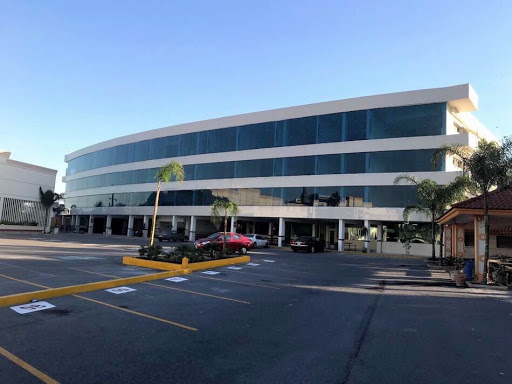
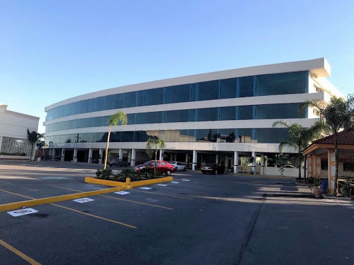
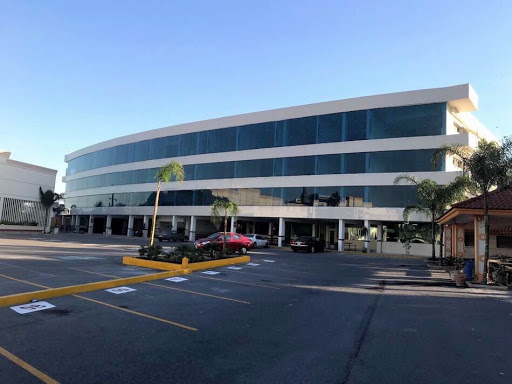

Mi nombre es Humberto S. G Vzz nacido en Guadalupe N.L. donde recido, Actualmente estudio en la Universidad Pedro de Gante en la carrera de Contador Público turno Nocturno y trabajo por las mañanas para la compañia Houston Dispatch Center en la cual ejerzo como el lider del equipo de Vigilancia (Surveillance), mi trabajo consiste en el monitoreo de camaras que llevan las gruas y así poder prevenir que los conductores cometan infracciones o si se llegase el caso reportar a los encargados de las estaciones si llegase a suceder algun accidente automovilistico.
1.- Escuchar podcast de terror - Aunque no soy creyente de lo paranormal, me gusta creer que podria existir algo despues de la muerte.
2.- Estudiar otros idiomas - Actualmente solo he estudiado Inglés pero me gustaría aprender algun otro lenguaje a futuro.
3.- Escuchar música - Sirve como remedio para el aburrimiento.
4.- Leer articulos medicos - Todos deberíamos saber lo básico sobre el cuerpo humano o sobre primeros auxilios.
